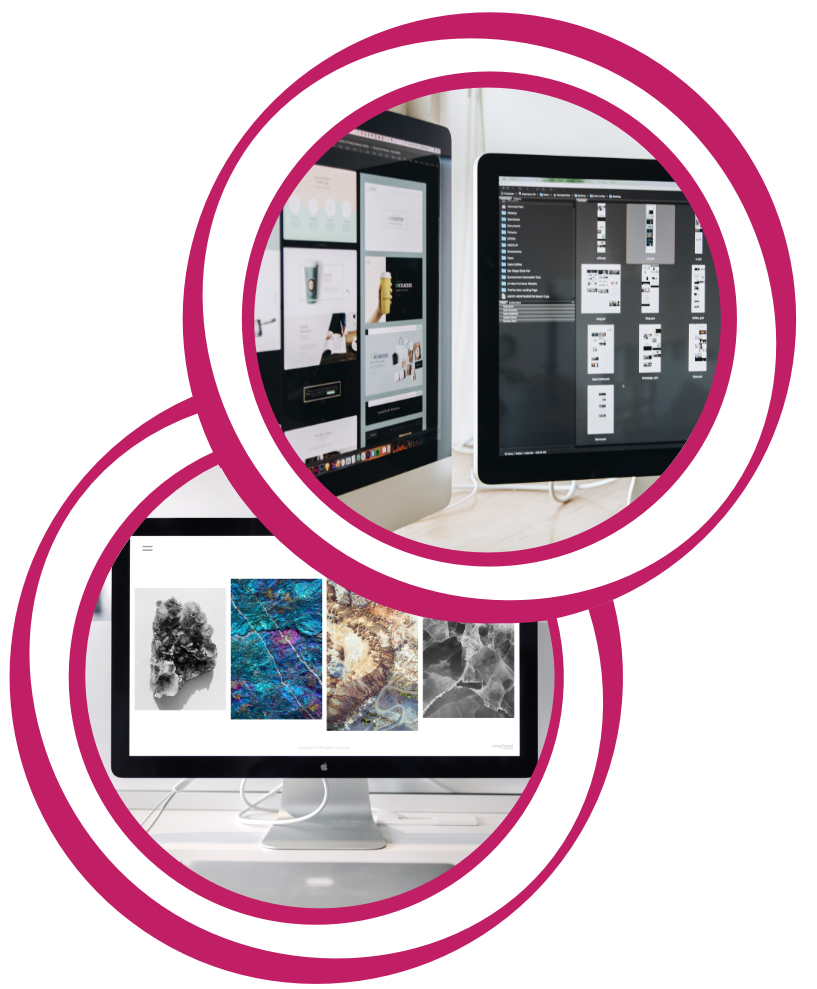

Overview
Purpose
Have you ever had a dream that seemed beyond your reach or a goal you couldn't possibly meet? Honestly, I have felt that way, and that's why I created Just Magically Creative. We're in the business of making your creative dreams a reality. With powerful magic and cutting-edge technologies, we can bring your ideas to life. We do it all, from brand design to complex interactive installations. We love our clients achieving their goals it fills us with excitement and pushes us to do more.
Audience
Our target audience is the creative, the innovative, the ones who dream and stretch our limits, bringing the impossible into reality. We work with everyone and would be happy to talk about price that is flexible to your small-scale or large-scale needs. Whatever the needs, an important part of us is continued interaction and support for one another. We will deliver a smooth and appealing experience for both mobile screens and desktop. With the world having a high volume of phone and mobile devices, we will place extra focus on optimizing and responsiveness.
Branding
Website Logo

Style Guide
Color Palette
Palette URL: https://coolors.co/f5d544-1d2cb2-2c1041-bf1f64-c9cbf8| Primary | Secondary | Accent 1 | Accent 2 | Background |
|---|---|---|---|---|
| [#1D2CB2] | [#BF1F64] | [#F5D544] | [#C9CBF8] | [#2C1041] |

Typography
Heading Font: Montserret
Montserret is a sans-serif font with high popularity in the online space. I am using this font for its large range of weight options and ability to draw attention.
Paragraph Font: Hind
Hind is a sans-serif font that is a complement to Montserret. I am using it for its looks, specifically that it is good at small fonts and clean in appearance.
Navigation
Site Map
Content
Home page
What can JMC do for you?
You’re witnessing the magic of creation. Pretty cool right? It seems you have a goal to meet, an ambition to make a reality. Well, lucky for you, that is what we’re all about. We get our kicks from using magic to make the impossible, possible and we love using your imagination to stretch our limits of creation.
We understand it can be difficult to know where to look to get your goals met and your deadlines beat. We have felt that way before too. Everyone says they can do it, but they lack one important thing… the magic of creation. Lucky for you that’s our foundation to make great products for the ambitious. Just Magically Creative is a multi-disciplinary studio, which means we do it all. We do everything from brand design to complex interactive installations. Basically, we are saying we enjoy bending reality as a career and you get to be the crux in our endeavors.
Types of Work: Installation, Branding & Strategy, Web Development, UI & UX, Concept Design, VR & AR, Animation, Illustration, Machine Learning, Creative Direction, and more…
We would love to hear from you! It takes more than one to harness the powers of magic after all.
Images for the Home page

- 
[Page 2]
Where ambitions become a reality… (Display work)
It seems your interest is peaked. Well, here is a little peak at how we use that magic to change the world. We can’t tell you all of the details, because it would ruin a perfectly good secret, but we can let a little slip.
Images for the Page 2


[Page 3]
What to expect from JMC?
1. We are in, All the way: We are here to help until the job is complete and to keep doing it again and again. We believe that the best only comes from constant growth and that can’t happen with a one off. We hope to keep seeing you again and again.
2. Magic is Our Guide: We believe in being transparent and open with each other. We want you to share your thoughts and feelings, but that also means we will tell you when you may be getting off course. Like we said, we like long term collaboration and that means we all keep course correcting.
3. We are all accountable for our own work: We value making things simple for you to understand. We enjoy having those who work on your ambitions interact with you directly, pretty cool huh? This is one important step toward magic.
4. Flexibility is a requirement for success: We all need to be agile and flexible in the world of today. We have learned something that stays stagnant will be forgotten. One of our best assets is to be able to adapt as needed.
5. We are Constantly Innovating: We hope that you will too! Expect for us to push the boundaries of what is accepted to reach your goals. We hope you will also look outside those boundaries.
6. The world is our canvas: It doesn’t matter the heights, depths, or anything in between. We are a United States company with an international focus. We welcome all to learn about the magic of creation and to see what it can do for you.
7. Passion is a must: You will learn quickly that magic flows when those involved are passionate. We certainly are and we expect you are too. That means we are already on our way to success.
Images for the Page 3
Wireframes
Create three wireframes for your site. One for each page and list them here
Home
The navigation is a pull out menu that will display the two different child pages.


[Page 2]
The navigation is a pull out menu that will display the two different child pages.


[Page 3]
The navigation is a pull out menu that will display the two different child pages.